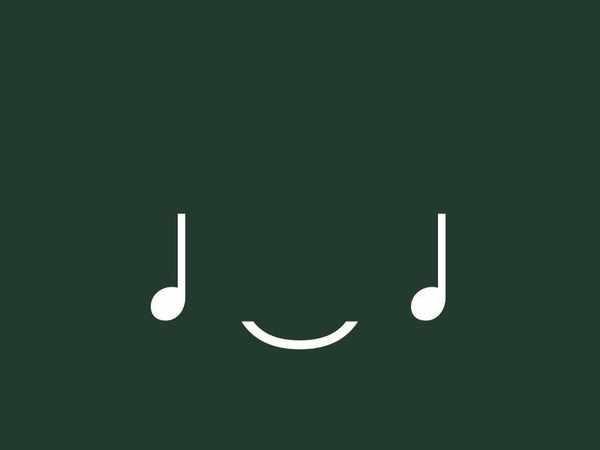

歌唱曲④ (翼をください・夏の思い出・明日を信じて)
誰もが知っている日本の定番曲「翼をください」「夏の思い出」と、中学校の合唱活動で歌われる「明日を信じて」について整理します。テストによく出る、拍子や調、歌詞が表現する風景の意味、大切な音楽記号などを詳しく見ていきましょう！
1. 「翼をください」の要点整理
教科書や合唱コンクールの定番であり、世界中で歌い継がれる名曲です。
① 基本データ
- 作詞：山上路夫（やまがみみちお）
- 作曲：村井邦彦（むらいくにひこ）
- 速度記号：Moderato（モデラート）
意味は「中ぐらいの速さで」
- 拍子：4分の4拍子
- 調：変ロ長調（へんろちょうじょう）（フラット「♭」がシとミの音に2つつく調）
- 合唱形態：混声三部合唱（後半のサビ部分でソプラノ・アルト・男声に分かれます）
② 楽典：3連符（さんれんぷ）の正体
この曲に登場する3連符（8分音符が3つ繋がって「3」と書かれたもの）は、4分音符を均等に3等分したものです。1拍（4分音符1つ分）の長さの中に3つの音を均等に割り振って歌います。
2. 「夏の思い出」の要点整理
尾瀬の自然の美しさと、心に残る夏の情景を歌った日本の代表的な歌曲。
① 基本データ
- 作詞：江間章子（えましょうこ）（「夏の思い出」の詩を書いた著名な詩人）
- 作曲：中田喜直（なかだよしなお）（「ちいさい秋みつけた」や「めだかの学校」などの作曲家）
- 拍子：4分の4拍子
- 調：ニ長調（にちょうじょう）（シャープ「♯」がファとドに2つつく調）
- 形式：二部形式（A-Bの2つの対照的な部分からなる形式）
- 歌われている湿原：尾瀬ヶ原（おぜがはら）（群馬・福島・新潟にまたがる自然豊かな湿原）
② 歌詞の意味（テスト必出！）
（初夏に咲くシャクナゲの花のような、淡いピンク色のことを指します）
③ 登場する音楽記号
- スラー ➔ 高さの違う2つ以上の音符を滑らかに演奏する（タイとの違いに注意！）。
- フェルマータ ➔ その音符（休符）をほどよくのばす。

フェルマータの記号
- ピアニッシモ (pp) ➔ とても弱く
- ディミヌエンド (dim.) ➔ だんだん弱く（decresc. と同じ意味です）
3. 「明日を信じて」の要点整理
明るい未来への一歩を感じさせる合唱曲です。
① 基本データ
- 作詞・作曲：小林真人（こばやしまさと）（一人で作詞・作曲の両方を手がけています）
- 拍子：4分の4拍子
② 登場する音楽記号・用語

8分休符
意味：半拍（0.5拍）休む

メッゾ フォルテ (mf)
意味：少し強く


タイ（Tie）：すぐ隣の「同じ高さ」の2つの音符を繋いで1つの音としてのばす記号。

クレシェンド（cresc.）：意味は「だんだん強く」
🔥 定期テスト対策・暗記のコツ
① スラーとタイの区別（記述問題で頻出！）
「夏の思い出」のなめらかなメロディには「スラー（高さの違う音符をなめらかに繋ぐ）」が使われます。一方、「明日を信じて」や他の曲で同じ高さの音を繋いで伸ばすのは「タイ」です。この2つの定義の違いをしっかり説明できるようにしておきましょう！
② 「夏の思い出」の湿原と花の色
地理との融合問題のようですが、「尾瀬ヶ原」と「石楠花色（薄い紅色）」の2つの単語は記述問題で非常によく狙われます。漢字で正確に書けるように練習してください。
③ 3連符の数学的理解
「翼をください」の8分音符3連符は「4分音符を3等分したもの」です。3等分する元の音符が何なのかを問う選択式問題によく出ますので、「3連符(8分音符)＝1拍＝4分音符」の方程式で理解しましょう！